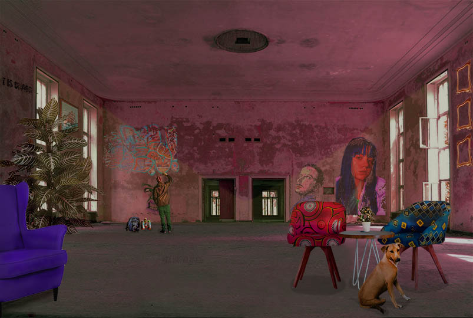

Za drugu vježbu trebali smo kreirati proizvoljan broj krivulja čije su točke poravnate prema mreži koordinatnog sustava. Također, trebali smo koristiti
interpolaciju te ispisati tekst preko krivulja koristeći vlastiti font i napraviti masku. Zadatak smo mogli raditi koristeći Adobe Illustrator ili Inkscape.
Za treću vježbu u Illustratoru trebali smo nacrtati vlastiti objekt koristeći se alatom Pen. Tehnikama kopiranja, rotacija, scalea, kreiranjem swatcheva
te koristeći transpiraciju, napravila sam Lego orhideju.
Za prvi projektni zadatak morali smo iscrtati sliku prema zadanom predlošku. Ja sam dobila fotografiju koja prikazuje košaru s voćem. Uz to morali
smo kreirati vlastiti font kojim će pisati riječ Voće.
Za vježbe iz piksel grafike mogli smo koristiti programe Adobe Photoshop ili Gimp. Ja sam sve vježbe radila u Photoshopu.
PETA VJEŽBA
Za petu vježbu trebali smo odabrati jednu fotografiju te na njoj primjeniti retuširanje.
ŠESTA VJEŽBA
Za šestu vježbu trebali smo kolorirati svoju crno-bijelu fotografiju te smo trebali napraviti minimalno pet primjera iste slike sa različitim postavkama
kolorizacije.
SEDMA VJEŽBA
U sedmoj vježbi morali smo napraviti fotomontažu. Pritom, koristila sam veći broj fotografija iz kojih sam selektirala dijelove koje sam željela izrezati
kako bi se što bolje uklopili u finalnu sliku.
DRUGI PROJEKTNI ZADATAK
Za drugi projektni zadatak trebali smo retuširati i kolorirati fotografije te napraviti fotomontažu.

VIDEO I WEB
Za ove vježbe mogli smo koristiti programe Adobe Premiere, Shotcut ili Davinci Resolve za editiranje videa, te Notepad++, Adobe Dreamweaver, Atom ili
Sublime Text za izradu web dokumenta. U ovim vježbama ja sam koristila Adobe Premiere i Notepad++.
OSMA VJEŽBA
Za osmu vježbu trebali smo snimiti vlastiti kratki video ili koristiti besplatan video isječak te ga obraditi kao kinematograf koristeći programe za editiranje
videa. Koristeći Premiere i besplatni video, napravila sam kinematograf ptice koja promatra more.
DEVETA VJEŽBA
Za devetu vježbu trebali smo minimalno izrezati dva videoisječka, koristiti efekte, dodati statičan, pomičan tekst te dodati novi zvuk.
DESETA I JEDANAESTA VJEŽBA
Za desetu vježbu trebali smo napraviti svoju vlastitu WEB stranicu koristeći HTML i CSS. Također, tu stranicu trebali smo uploadati na Github račun. Stranicu
sam napravila koristeći Notepad++.